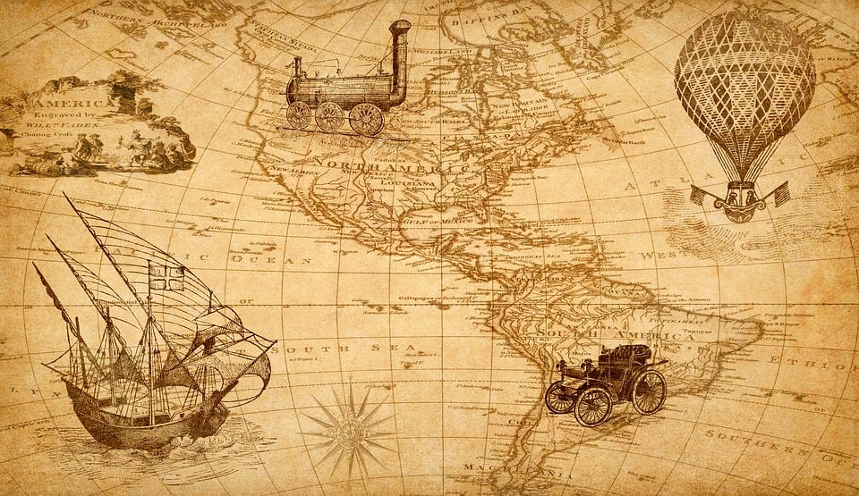
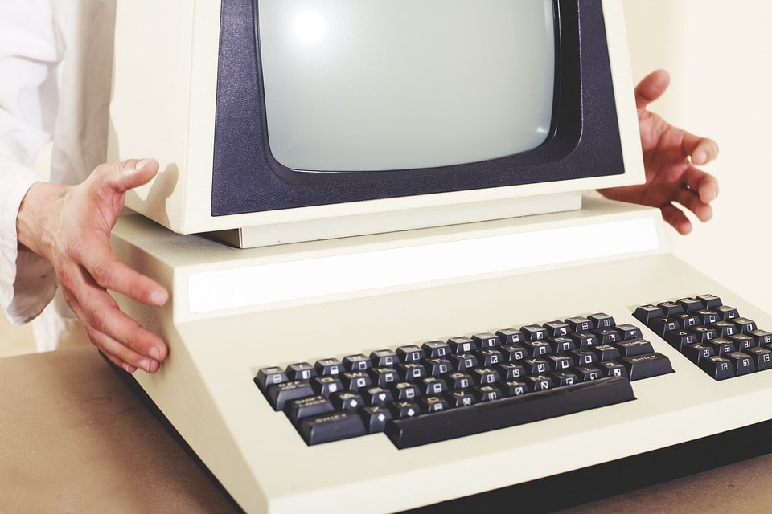
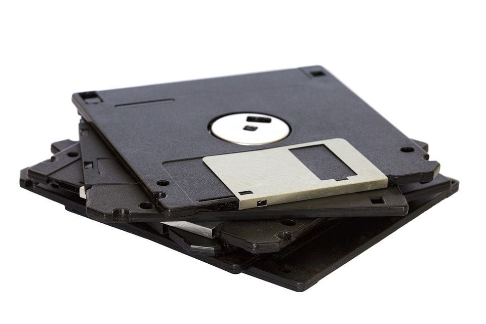

The History of
Computers
and Technology

▶ The history of computers dates back to the early 1800s when Charles Babbage designed a calculating machine called the Difference Engine. This was followed by the invention of the first programmable computing machine in the 1940s, the Digital Delay Storage Automatic Calculator. In the 1950s, the first commercial computer, the IBM 701, was introduced, followed by the first personal computer, the Commodore PET, in 1977. In the early 2000s, the popularity of smartphones and tablets increased which resulted in the transition of computer technology to a more user-friendly digital era.

